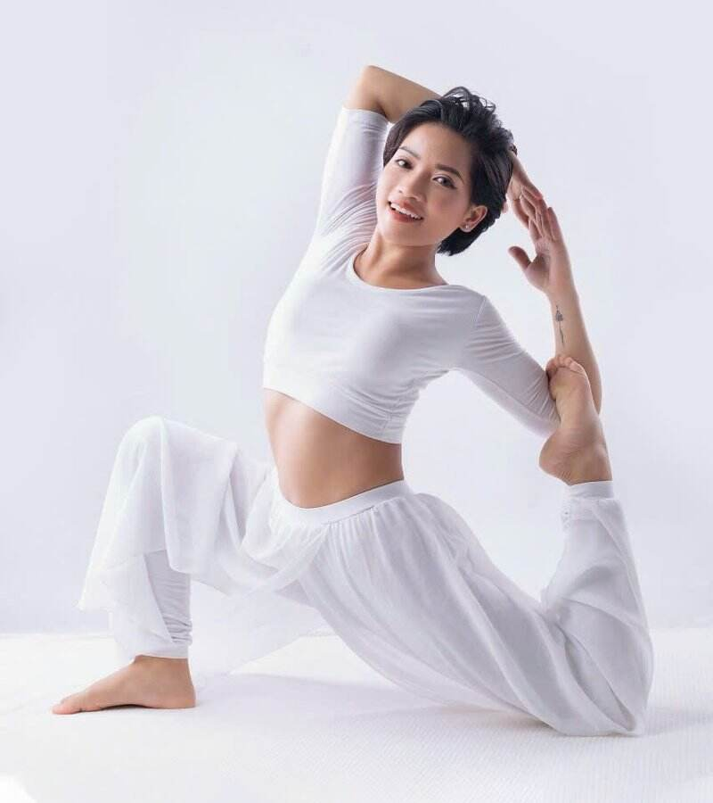

Yoga người lớn · Sức khỏe phụ nữ
Ứng dụng yoga cân bằng phục hồi cho phụ nữ
Tập theo chu kỳ, khi mang bầu và sau sinh. Một cơ thể, nhiều mùa.
Có ba câu hỏi cô nghe đi nghe lại, từ nhiều chị em khác nhau, qua nhiều năm đứng lớp.
“Cô ơi, em vừa biết mình có bầu. Em có phải nghỉ tập không ạ?”
“Đến tháng em đau bụng quá. Có nên tập không cô?”
“Con em mới mấy tháng. Bao giờ em tập lại được như trước?”
Câu hỏi thì ngắn. Nỗi lo thì dài.
Ba giai đoạn khác nhau, chung một điều: cơ thể người phụ nữ không đứng yên. Nó thay đổi theo tuần, theo tháng, theo từng đứa con.
Bài viết này chia sẻ cách tập yoga hợp với từng “mùa” đó: bốn giai đoạn của chu kỳ kinh nguyệt, ba tam cá nguyệt khi mang bầu, và những tháng sau sinh. Có những gì nên tập, những gì nên tránh, và cả lúc nào cần gặp bác sĩ trước khi trải thảm.

🌿 Không chỉ là tư thế
Con đường Sophia đi là yoga cân bằng, phục hồi. Phục hồi trên cả năm thể: thân, tâm, trí, thể khí và thể tinh thần. Vì vậy trong bài này, tư thế chỉ là một phần nhỏ.
Đau bụng kinh, mệt khi mang bầu, kiệt sức sau sinh hiếm khi đến từ một chỗ. Giấc ngủ, bữa ăn, hơi thở, cách mình nghĩ về cơ thể mình, cả sự nâng đỡ của người thân, đều góp vào. Một mẹo hay một tư thế có thể làm dễ chịu hôm nay. Còn để cơ thể thật sự cân bằng, cần thay đổi cả lối sống, từng chút, đều đặn.
Tập hợp với giai đoạn. Ngủ đủ, ăn đủ chất, uống đủ nước.
Hơi thở bụng, thở ra dài. Thứ theo mẹ suốt thai kỳ, vào tận phòng sinh.
Cảm xúc lên xuống theo hormone. Cho phép mình mềm, buồn, nghỉ.
Hiểu cơ thể mình. Bớt so sánh, bớt vội “lấy lại dáng”.
Bình an, biết ơn cơ thể, kết nối với con, với chính mình.
Muốn hiểu kỹ hơn về năm thể, có bài Năm thể của con người.
Chu kỳ không chỉ là mấy ngày “đến tháng”
Nhiều chị em chỉ để ý đến chu kỳ khi bắt đầu hành kinh. Thật ra cả tháng, hormone lên xuống như thủy triều. Estrogen, progesterone, cùng vài hormone từ tuyến yên, thay nhau dẫn nhịp. Năng lượng, giấc ngủ, độ dẻo, cả tâm trạng cũng đi theo nhịp đó.
Một chu kỳ trung bình khoảng 28 ngày, nhưng từ 21 đến 35 ngày đều được coi là bình thường. Con số trong bài chỉ để dễ hình dung. Cơ thể mỗi người mới là cuốn lịch thật.
Kéo thanh trượt bên dưới, chọn ngày trong chu kỳ của mình:
Tính từ ngày đầu tiên có kinh. Chu kỳ dài hay ngắn hơn 28 ngày thì giai đoạn hoàng thể vẫn thường khoảng 12 đến 14 ngày, phần thay đổi chủ yếu nằm ở giai đoạn nang noãn.
Tập theo bốn giai đoạn
Không có luật cứng ở đây. Đây là gợi ý, để mình lắng nghe cơ thể tốt hơn chứ không phải thêm một bảng phải tuân theo.
🌙 Hành kinh
khoảng ngày 1 đến 5
Estrogen và progesterone đều xuống thấp. Tử cung co bóp để bong lớp niêm mạc. Nhiều người thấy nặng bụng, mỏi lưng dưới, buồn ngủ, dễ tủi thân.
Tập chậm, có gối đỡ. Tư thế em bé, góc cố định nằm ngửa (hai bàn chân chạm nhau, gối kê dưới đùi), mèo bò thật chậm, vặn xoắn nằm nhẹ, chân dựa tường. Thở bụng dài, thở ra dài hơn hít vào.
Thở Kapalabhati, khóa bụng (Uddiyana, Nauli), các thế siết bụng mạnh. Những ngày ra nhiều, cô thường gợi ý nghỉ các thế đảo ngược như trồng chuối, nến vai.
🌱 Nang noãn
khoảng ngày 6 đến 13
Estrogen tăng dần. Nhiều chị em thấy người nhẹ, đầu sáng, muốn vận động, muốn bắt đầu cái mới.
Thời điểm hợp để học tư thế mới, tập chào mặt trời, các thế đứng và thăng bằng, tập sức bền. Cũng là lúc dễ “hăng” quá tay, nên vẫn giữ hơi thở làm thước đo.
Gần như không có gì phải kiêng thêm. Chỉ cần nhớ khởi động kỹ trước các thế mở sâu.
☀️ Rụng trứng
khoảng ngày 14 đến 16
Estrogen lên đỉnh, có thêm một đợt LH. Năng lượng thường cao nhất tháng. Một số người hơi đau một bên bụng dưới, kéo dài vài giờ.
Tập mạnh vừa phải, các chuỗi có nhịp, thế đứng, mở hông. Tập cùng bạn, tập nhóm cho vui.
Có vài nghiên cứu ghi nhận dây chằng có thể lỏng hơn một chút quanh thời điểm này. Cô hay nhắc học viên không ép khớp gối, khớp hông quá biên độ quen thuộc.
🍂 Hoàng thể
khoảng ngày 17 đến 28
Progesterone tăng rồi giảm dần về cuối. Thân nhiệt nhích lên một chút. Những ngày cuối dễ đầy bụng, căng ngực, cáu gắt, thèm ngọt, ngủ không sâu.
Nửa đầu vẫn tập bình thường. Nửa cuối chậm lại: các thế giữ lâu, gập người về trước, vặn xoắn nhẹ, thở luân phiên hai mũi, thở bốn thì, thiền ngắn trước khi ngủ.
Tránh phòng tập quá nóng. Bớt các chuỗi nhanh khi thấy hồi hộp, bứt rứt. Đây là lúc cần dịu, không cần lập kỷ lục.
Chuyện trồng chuối khi hành kinh, nhiều trường phái yoga truyền thống khuyên tránh. Đến nay chưa có nghiên cứu nào cho thấy đảo ngược ngắn gây hại cho người khỏe mạnh. Sophia không cấm. Cô chỉ hỏi: hôm nay cơ thể em có muốn lộn ngược không? Phần lớn câu trả lời là không.
Khi đau bụng kinh
Đau bụng kinh nguyên phát, tức là không do bệnh lý nào, đến từ prostaglandin làm tử cung co bóp mạnh. Cơn đau âm ỉ, quặn, lan xuống lưng dưới và đùi.
Mấy tư thế cô hay gợi ý trong những ngày này:
- Tư thế em bé, hai gối mở rộng, kê gối ôm dưới ngực và bụng.
- Góc cố định nằm ngửa, gạch hoặc gối đỡ hai bên đùi, một tay đặt lên bụng dưới.
- Mèo bò thật chậm, theo hơi thở.
- Rắn hổ mang thấp, chỉ nâng ngực một chút.
- Ôm gối vào ngực, lắc nhẹ sang hai bên.
- Thở bụng, thở ra dài gấp đôi hít vào.
Rakhshaee (2011) cho các nữ sinh bị đau bụng kinh tập ba tư thế rắn hổ mang, mèo, cá trong giai đoạn hoàng thể. Sau hai chu kỳ, mức độ và thời gian đau giảm rõ so với nhóm không tập.
Yang và Kim (2016) thử chương trình yoga 12 tuần: nhóm tập đỡ đau và đỡ khó chịu trước kỳ kinh hơn nhóm chứng. Một phân tích tổng hợp năm 2019 của Kim cũng ghi nhận yoga làm giảm đau bụng kinh, dù các nghiên cứu còn nhỏ.
Đau tới mức phải nghỉ học, nghỉ làm, uống thuốc giảm đau không đỡ, hay càng ngày càng đau hơn, thì không nên chỉ dựa vào yoga. Lạc nội mạc tử cung, u xơ, viêm nhiễm đều có thể gây đau như vậy và cần được bác sĩ phụ khoa khám.
Chu kỳ quá thất thường, mất kinh nhiều tháng, mọc mụn và lông nhiều bất thường cũng là lý do để đi khám. Hội chứng buồng trứng đa nang và rối loạn tuyến giáp đều ảnh hưởng tới chu kỳ. Bài Các tuyến nội tiết và yoga có nói kỹ hơn yoga hỗ trợ được gì và không thay được gì.
Khi mang bầu
Với câu hỏi “có phải nghỉ tập không”, cô thường trả lời: “Không nhất thiết. Nhưng mình đổi cách tập. Và em hỏi bác sĩ khám thai trước nhé.”
Với một thai kỳ khỏe mạnh, vận động vừa phải được khuyến khích. Hiệp hội Sản Phụ khoa Hoa Kỳ (ACOG) gợi ý khoảng 150 phút mỗi tuần, chia ra nhiều ngày. Yoga tiền sản là một lựa chọn nhẹ nhàng trong số đó.
Có một hormone tên là relaxin, tăng lên khi mang bầu để làm mềm dây chằng vùng chậu, chuẩn bị cho ngày sinh. Nó không chỉ làm mềm vùng chậu. Khớp nào cũng “lỏng” hơn. Vì vậy cảm giác “hôm nay dẻo quá” khi mang bầu là cái bẫy. Cô thường nhắc học viên dừng lại ở khoảng 70 đến 80 phần trăm biên độ, giữ khớp ổn định hơn là kéo cho sâu.
Ba tháng đầu
tuần 1 đến 13
Bên ngoài chưa thấy gì. Bên trong thì rất nhiều việc. Mệt, nghén, buồn ngủ, ngửi mùi gì cũng khó chịu. Đây cũng là giai đoạn em bé hình thành các cơ quan.
- Người đã tập đều trước khi mang bầu: thường có thể tập tiếp, nhẹ hơn, sau khi hỏi bác sĩ.
- Người chưa từng tập: nhiều lớp tiền sản chỉ nhận học viên mới từ khoảng tuần 12 đến 14, khi thai đã ổn định hơn và cơn nghén đã dịu.
- Ưu tiên: thở bụng, ngồi thiền ngắn, mèo bò, thế đứng nhẹ, nằm nghiêng thư giãn.
- Ngày nghén nặng, tập năm phút thở cũng là một buổi tập.
- Kapalabhati, Bhastrika, nín thở lâu
- Yoga nóng (phòng 35 đến 40 độ)
- Thế nằm sấp, siết bụng, gập bụng
- Vặn xoắn sâu kiểu “đóng” (vặn về phía chân trước, ép bụng)
- Nhảy, bật, chuyển thế nhanh
Ba tháng giữa
tuần 14 đến 27
Thường là giai đoạn dễ chịu nhất. Nghén giảm, năng lượng quay lại. Bụng bắt đầu lớn, trọng tâm dịch ra trước, lưng dưới làm việc nhiều hơn.
- Chân đứng rộng hơn ngang hông, chừa chỗ cho bụng.
- Thế thăng bằng tập cạnh tường hoặc ghế. Ngã là điều cần tránh nhất.
- Vặn xoắn kiểu “mở”: xoay ngực về phía rộng, không ép vào bụng.
- Tập nhẹ cơ sàn chậu, cơ mông, cơ lưng giữa. Đây là những cơ sẽ gánh em bé.
- Thư giãn cuối buổi bằng nằm nghiêng trái, gối kẹp giữa hai đầu gối.
- Nằm ngửa phẳng lâu sau khoảng tuần 16 đến 20 (tử cung đè lên tĩnh mạch lớn, dễ chóng mặt, buồn nôn)
- Thế nằm sấp, gập bụng, plank giữ lâu
- Uốn lưng sâu như bánh xe, con lạc đà sâu
- Kéo giãn quá biên độ thường ngày
- Đảo ngược nếu chưa từng tập thành thạo trước khi mang bầu
Ba tháng cuối
tuần 28 đến khi sinh
Bụng nặng. Hơi thở ngắn hơn vì tử cung đẩy cơ hoành lên. Chân dễ phù, chuột rút về đêm, ngủ khó. Tâm trí bắt đầu hướng về ngày sinh.
- Tập ngắn, chậm, nhiều điểm tựa: ghế, tường, gối, gạch.
- Thế ngồi xổm có gạch đỡ mông, mở hông nhẹ (nếu bác sĩ không có lưu ý gì về nhau thai hay ngôi thai).
- Mèo bò, lắc hông trên bóng, giúp lưng dưới dễ chịu.
- Luyện thở ra dài và chậm. Đây là thứ mẹ mang theo vào phòng sinh.
- Tập buông cơ sàn chậu khi thở ra, không chỉ siết.
- Mọi thế nằm ngửa phẳng
- Thế thăng bằng một chân không có điểm tựa
- Chuyển thế nhanh, đứng lên ngồi xuống đột ngột
- Bất cứ động tác nào thấy bụng căng cứng, co thắt
Polis và cộng sự (2015) theo dõi 25 phụ nữ mang bầu khỏe mạnh, tuần 35 đến 37, tập 26 tư thế yoga. Nhịp tim thai và chỉ số của mẹ đều ổn định. Lưu ý quan trọng: đó là những người đã quen tập, có người hướng dẫn, trong phòng không nóng.
Tổng quan của Babbar và cộng sự (2012) ghi nhận yoga tiền sản có liên quan đến giảm căng thẳng, lo âu, giảm đau lưng, và một số nghiên cứu thấy chuyển dạ dễ chịu hơn. Các tác giả cũng nói rõ cần thêm nghiên cứu lớn hơn.
Ina May Gaskin, bà đỡ nổi tiếng với cuốn Ina May's Guide to Childbirth, có một câu cô rất thích: cơ thể người mẹ “không phải một quả chanh hỏng”. Ý bà là cơ thể biết cách sinh con. Yoga khi mang bầu, với cô, cũng là để mẹ tin lại cơ thể mình. Không phải để dẻo hơn. Để bình tĩnh hơn.
⚠️ Dừng tập ngay và gọi bác sĩ khi có:
- Ra máu âm đạo, hoặc rỉ nước
- Cơn co thắt đều đặn, đau
- Chóng mặt, choáng, đau đầu dữ dội
- Khó thở ngay cả trước khi gắng sức, đau ngực
- Đau, sưng một bên bắp chân
- Thấy con máy ít hơn hẳn mọi ngày
Những trường hợp thường được khuyên không tập, hoặc chỉ tập khi bác sĩ cho phép cụ thể: tiền sản giật, cao huyết áp thai kỳ không kiểm soát, nhau tiền đạo, hở eo tử cung hay đã khâu cổ tử cung, dọa sinh non, ra máu kéo dài, đa thai có nguy cơ, thiếu máu nặng, bệnh tim phổi.
Sau sinh: chậm mà chắc
Chín tháng để cơ thể thay đổi. Cho nó ít nhất chừng đó thời gian để hồi lại.
Có một áp lực vô hình với nhiều mẹ: phải sớm “lấy lại dáng”. Sophia hiểu. Nhưng sau sinh, thứ cần lấy lại trước tiên không phải vòng eo. Là cơ sàn chậu, là cơ bụng sâu, là giấc ngủ, là sự bình an trong đầu.
Những ngày đầu
0 đến 2 tuần
Nghỉ là chính. Nằm thở bụng nhẹ. Thở ra, cảm nhận cơ sàn chậu và cơ bụng sâu khẽ thu lại. Hít vào, thả ra. Xoay cổ chân, co duỗi ngón chân để máu lưu thông. Mẹ sinh mổ thì chỉ thở, và tập ho, đứng dậy theo cách nhân viên y tế hướng dẫn.
Hồi lại từ từ
2 đến 6 tuần
Nếu sản dịch giảm dần, vết khâu không đau thêm, có thể đi bộ ngắn và tập thở, sàn chậu đều hơn. Mèo bò nhẹ, cây cầu thấp, nằm nghiêng nâng chân. Ngực căng sữa thì cho bé bú trước khi tập.
Sau buổi tái khám
sau 6 tuần (sinh mổ có khi 8 tuần hoặc hơn)
Khi bác sĩ đã khám và cho phép, quay lại lớp yoga nhẹ. Thêm dần các thế đứng, chào mặt trời chậm. Kiểm tra tách cơ bụng trước khi tập lại plank, gập bụng, uốn lưng sâu.
Quay về nhịp cũ
từ khoảng tháng thứ 3 đến 12
Cơ thể cần gần một năm, có người lâu hơn, để mô liên kết và sàn chậu vững lại. Thế mạnh, nhảy, đảo ngược nâng cao thì thêm vào từng chút, không có mốc chung cho mọi người. Mất ngủ vì con là chuyện thật. Có đêm ngủ ít, hôm sau tập nằm thư giãn mười phút cũng được.
Tách cơ bụng: tự kiểm tra trước khi tập lại
Khi mang bầu, hai dải cơ bụng thẳng giãn ra hai bên để nhường chỗ cho em bé. Ở nhiều mẹ, chúng tự khép lại sau vài tuần. Một số mẹ thì khe hở còn lâu hơn.
Cách tự kiểm tra: nằm ngửa, co gối, bàn chân đặt trên sàn. Đặt các đầu ngón tay ngang ngay trên rốn. Thở ra, nâng đầu và vai lên một chút. Nếu ngón tay lọt vào khe giữa hai dải cơ, rộng hơn khoảng hai ngón, hoặc thấy bụng nhô lên thành một “mái nhà” dọc giữa bụng, thì có thể đang tách cơ.
Khi đó, cô thường gác lại gập bụng, plank giữ lâu, uốn lưng sâu, vặn xoắn mạnh. Thay bằng thở và thu cơ bụng sâu khi thở ra, cây cầu, mèo bò, nằm nghiêng nâng chân. Khe hở rộng hoặc kèm đau lưng, tiểu són thì nên gặp bác sĩ hoặc chuyên viên vật lý trị liệu sàn chậu.
Cơ sàn chậu
Hắt hơi mà són tiểu. Nhiều mẹ ngại không nói với ai. Thật ra rất thường gặp sau sinh, và tập được.
Tổng quan Cochrane của Woodley và cộng sự (2020): tập cơ sàn chậu trong lúc mang bầu giúp giảm nguy cơ tiểu không tự chủ cuối thai kỳ và vài tháng sau sinh.
Buttner và cộng sự (2015) cho các mẹ bị trầm cảm sau sinh tập yoga 8 tuần. Triệu chứng trầm cảm, lo âu giảm nhiều hơn so với nhóm chờ.
Nói về trầm cảm sau sinh. Buồn vài ngày sau sinh là chuyện nhiều mẹ gặp. Nhưng nếu buồn kéo dài quá hai tuần, mất hứng thú với mọi thứ, thấy mình vô dụng, không gắn bó được với con, hay có ý nghĩ làm hại bản thân, thì yoga không đủ. Mẹ cần được bác sĩ giúp, và cần người thân biết. Nói ra không phải là yếu đuối.
Khi nào nên hỏi bác sĩ trước
- Vừa biết mình mang bầu, trước khi tiếp tục hay bắt đầu lớp yoga
- Có bất kỳ biến chứng thai kỳ nào kể trên
- Sau sinh, trước khi quay lại lớp (thường ở buổi tái khám 6 tuần)
- Sinh mổ, vết mổ còn đau, đỏ, rỉ dịch
- Sản dịch ra nhiều lên hoặc đỏ tươi trở lại sau khi tập
- Đau bụng kinh dữ dội, ra kinh rất nhiều, chu kỳ rối loạn kéo dài
- Đau vùng chậu, đau khớp mu khi đi lại
Khi đến lớp, hãy nói với người hướng dẫn mình đang ở giai đoạn nào. Người hướng dẫn tốt sẽ đổi bài cho mình, không bắt mình theo cả lớp.
Lời nhỏ cuối bài
Christiane Northrup, trong cuốn Women's Bodies, Women's Wisdom, viết nhiều về việc lắng nghe chu kỳ như lắng nghe một người bạn. Cô thấy điều đó đúng với cả lúc mang bầu và sau sinh.
Có tháng mình mạnh. Có tháng mình mềm. Có năm mình nuôi một sinh linh bằng chính cơ thể mình.
Yoga không bắt cơ thể phải giống nhau mỗi ngày. Chỉ mời mình trở về, thở, và đối xử với nó dịu dàng hơn một chút.
Và đó không phải việc của riêng bốn mươi lăm phút trên thảm. Là bữa ăn, giấc ngủ, hơi thở lúc bế con, ý nghĩ mình dành cho chính mình. Thân, tâm, trí, khí, tinh thần cùng được chăm, thì sức khỏe mới cân bằng và bền.
🌿 Muốn tập yoga nhẹ nhàng, đúng với giai đoạn của mình?
Sophia Yoga có lớp người lớn trực tiếp, lớp Zoom và lớp kèm 1 kèm 1, điều chỉnh bài cho từng người. Mẹ nào muốn mang yoga về cho con, hoặc muốn dạy yoga cho các bé, có khóa đào tạo HLV Yoga trẻ em.
Tài liệu tham khảo
- American College of Obstetricians and Gynecologists (2020). Physical Activity and Exercise During Pregnancy and the Postpartum Period. Committee Opinion No. 804. Obstetrics & Gynecology, 135(4).
- Rakhshaee Z. (2011). Effect of three yoga poses (cobra, cat and fish poses) in women with primary dysmenorrhea: a randomized clinical trial. Journal of Pediatric and Adolescent Gynecology, 24(4).
- Yang N.Y., Kim S.D. (2016). Effects of a yoga program on menstrual cramps and menstrual distress in undergraduate students with primary dysmenorrhea: a single-blind, randomized controlled trial. Journal of Alternative and Complementary Medicine, 22(9).
- Kim S.D. (2019). Yoga for menstrual pain in primary dysmenorrhea: a meta-analysis of randomized controlled trials. Complementary Therapies in Clinical Practice, 36.
- Polis R.L. và cộng sự (2015). Yoga in pregnancy: an examination of maternal and fetal responses to 26 yoga postures. Obstetrics & Gynecology, 126(6).
- Babbar S., Parks-Savage A.C., Chauhan S.P. (2012). Yoga during pregnancy: a review. American Journal of Perinatology, 29(6).
- Woodley S.J. và cộng sự (2020). Pelvic floor muscle training for preventing and treating urinary and faecal incontinence in antenatal and postnatal women. Cochrane Database of Systematic Reviews.
- Buttner M.M. và cộng sự (2015). Efficacy of yoga for depressed postpartum women: a randomized controlled trial. Complementary Therapies in Clinical Practice, 21(2).
- Gaskin I.M. (2003). Ina May's Guide to Childbirth. Bantam. Northrup C. (1994). Women's Bodies, Women's Wisdom. Bantam.
Hình minh họa do Sophia Yoga tự vẽ. Những câu hỏi đầu bài là câu cô hay được nhiều học viên hỏi, không nêu tên ai. Bài viết chia sẻ kiến thức và kinh nghiệm tập luyện, không thay cho lời khuyên của bác sĩ sản phụ khoa.